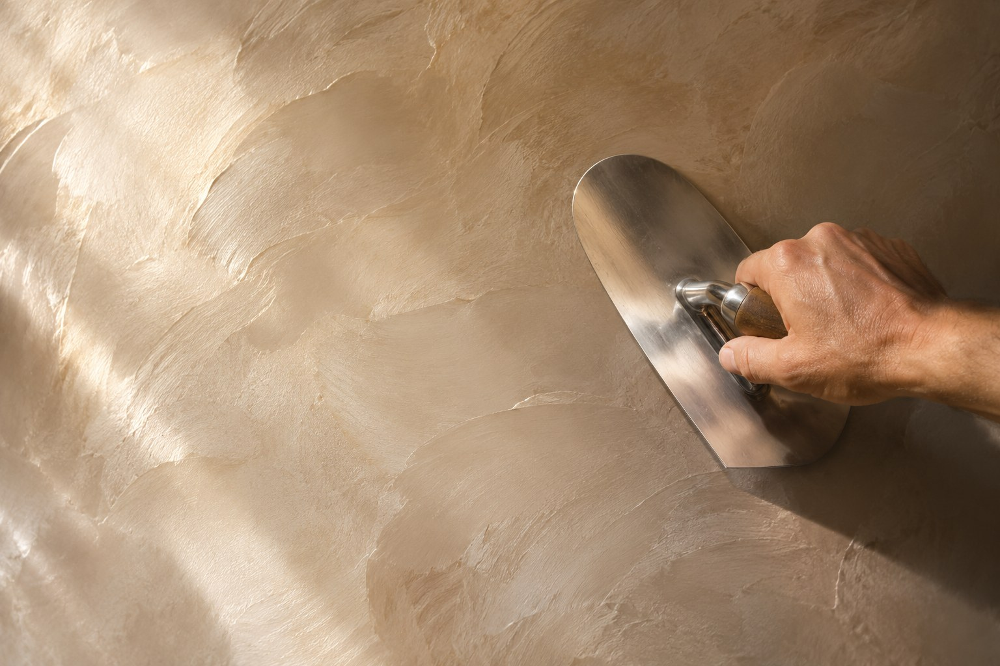

Venezianische Kalkspachteltechnik
Wenn Licht über Kalk streicht.
Eine Wand schimmert, die nächste wirkt fast matt. Für Ihren Wohnraum stimmen wir den Stucco Veneziano über mehrere Flächen ab, vom ersten Muster bis zum letzten Zug der Kelle.
Eine Musterfläche planen
Wählen Sie eine Wand, an der tagsüber Licht entlangstreicht. Dort lässt sich am Muster besprechen, wie lebhaft die Zeichnung sein soll und wie sie an der nächsten Wand weiterläuft.